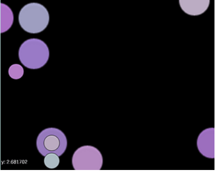
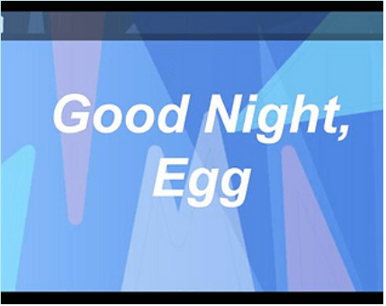

Hi, I'm Lex!
My name is Lex Yu and I'm an undergraduate at the University of Southern California studying
Computer Science (Games)
an interdisciplinary program that includes the curriculum of the standard CS major, plus game design and game programming classes.
Below are some projects I've worked on! (For my employment/everything resume, please email me at lsyu@usc.edu.)

I worked on Time Tails during my internship at Snowbright Studio! Time Tails is a kids 2D point and click adventure partially funded by the US Dept. of Education, and it includes history lessons and teaches players about some basic features of the Unity engine. I translated wireframes into Unity scenes, and programmed three of the levels, including integrating a pre existing dialogue system into the levels which involved reading documentation for that system. I also programmed the menus and conclusion sequence. (Unity/C#)

I was the primary programmer on Our First Kiss, another students' Masters Thesis project (Unity/C#, I did software only). It's a festival (or you can play it at home with a friend or partner) game about performing affection and wordlessly communicating to time your first kiss at a movie date! I programmed the kissing mechanic, the color saturation and music/film clip changes, the keyboard controls remapping, the accessories selection, the ending, and I debugged the movement code.
Smaller Projects:

I made this alone in half a day in Unity, it was inspired by the Home Depot color sample section and also by my slight fear of outer space. You click and combine a bunch of differently colored blobs, whose color gets averaged when you combine them, until you've combined all of them and end with a final color. The blobs are randomly scattered throughout the space, and many are offscreen (there's a box that tells you where your cursor is in space so you don't get lost, and hints in case you can't find the next blob.)

This was my first Unity game that I made alone as an optional class project, basically a 2D simulator of a genderqueer teen checking their phone before bedtime.